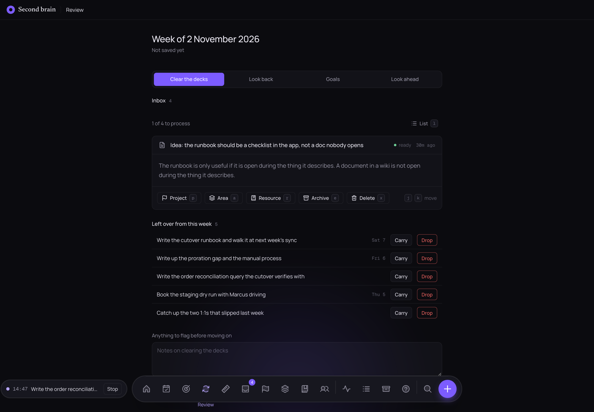
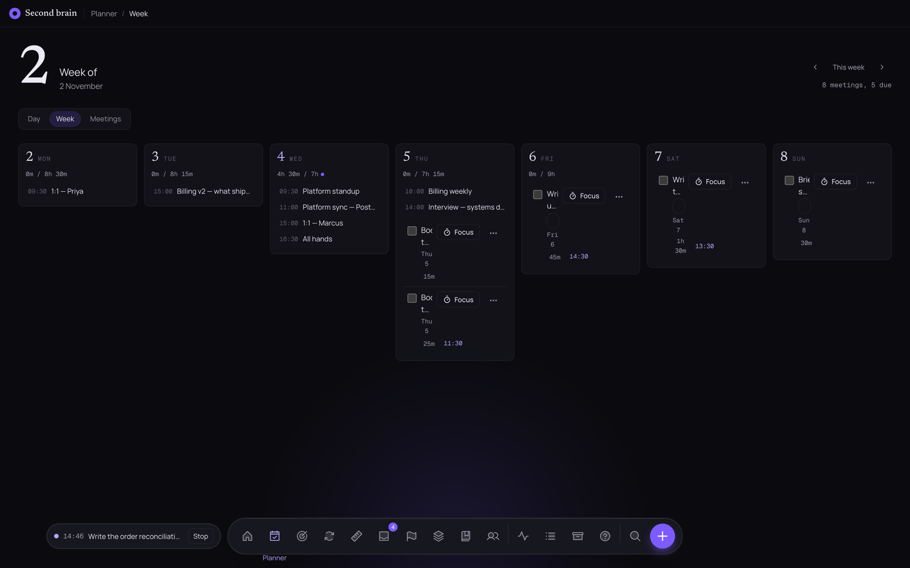
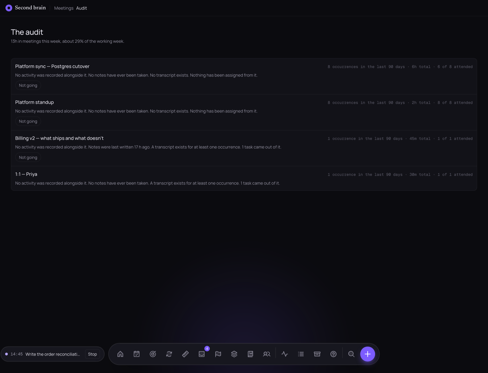
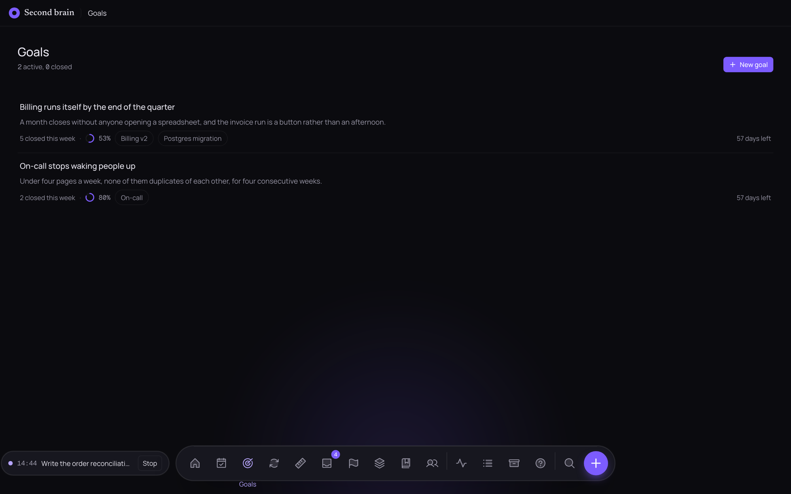

Install
Apple Silicon, macOS 12 (Monterey) or newer. The Homebrew cask is the recommended way in:
brew tap heapworks-in/tap
brew trust heapworks-in/tap
brew install --cask second-brainThe middle line is Homebrew asking before it loads a cask from a tap it does not know. The cask then installs the four things the app looks for at runtime:
| Dependency | What stops working without it |
|---|---|
node |
Everything — the app ships a built server, not a Node runtime. |
whisper-cpp |
Transcription, live and final. |
llama.cpp |
Meeting summaries and note distillation. |
ffmpeg |
Transcribing audio you dropped in rather than recorded. |
Each of those is a feature switched off when it is missing, not a crash — which is exactly how an install without
llama.cpp can look fine and never produce a single summary. Installing through Homebrew is what makes
that impossible.
The dmg on the releases page is the same build. The app is ad-hoc signed, so opening it by hand needs right-click → Open the first time; the cask clears the quarantine flag for you.
First launch
Opening the app the first time does four things, with the progress on screen rather than behind a spinner:
- Unpacks the bundled server into
~/Library/Application Support/com.second-brain.desktop/. - Downloads the models — about 6 GB in total, resumable, and never fetched again.
- Builds the two Swift helpers (the activity watcher and the recorder) from the bundled source.
- Starts the server and opens the window on
localhost:3141.
| Model | Size | Used for |
|---|---|---|
| whisper base.en | ~150 MB | The live transcript during a meeting |
| whisper large-v3-turbo | ~1.6 GB | The final, accurate pass afterwards |
| Qwen2.5-7B-Instruct Q4_K_M | ~4.4 GB | Meeting summaries |
| Qwen2.5-0.5B-Instruct Q4_K_M | ~400 MB | Note distillation |
| all-MiniLM embeddings | ~35 MB | Semantic search |
Closing the window hides it; the app keeps running in the menu bar so recording and activity tracking carry on. Quit from the tray to stop everything.
The app is usable immediately — capture, search and planning do not wait for any of it. A meeting recorded before the summary model has landed is not lost: the app sweeps for meetings that never got a pass and queues them when it next starts.
Permissions
macOS asks the first time each is needed. All of them are refusable, and refusing one only switches off what it covers.
| Permission | Why |
|---|---|
| Microphone | Recording your side of a meeting. |
| System Audio Recording | macOS 14.2+. The other side of the call. Refuse it and recording still works, microphone only. |
| Calendar | Knowing a meeting is starting, so it can record itself. |
| Accessibility | The activity helper reading which window is in front. Never prompted for — grant it in System Settings. |
To check what the recorder can actually reach, ask it:
"$HOME/Library/Application Support/second-brain/bin/sb-recorder" --probeThe helpers are ad-hoc signed, so a permission is bound to that exact binary. Updating the app silently voids whatever the previous build was granted, and the stale entry still appears switched on in System Settings. Remove it with the − button and let it ask again, rather than toggling it off and on.
Capture
Press c anywhere for the capture bar, or g c for the full page. It takes a typed note, a pasted link, or a dropped file — PDFs are read, images go through OCR, links are fetched and kept as text so they stay searchable after the page changes.
Nothing asks where it belongs. Everything lands in the Inbox unfiled, which is the only way capture stays fast enough
to actually use. Mention @someone in a note and it is linked to that person.
The Inbox
Processing is one decision per item, and the keyboard does all of it: p files to a project, a to an area, r to a resource, e archives, x deletes, j and k move between items, l switches to the list view.

Projects, Areas, Resources
Everything you keep lives in exactly one of four places, split by what it is for rather than what it is:
- Projects have an end — something you are working toward finishing, with a deadline.
- Areas do not end — a standard you maintain for as long as it matters.
- Resources are reference: notes and links you are keeping for later, not acting on now.
- Archive holds closed projects and dead areas. Out of the way, never deleted.
Library is the catalogue of everything regardless of where it is filed, with filters for type, status, tag, date and home. Completing a project asks where its leftovers should go.
Planner and Focus
Day and Week views for time-blocking. Drag a task onto the timeline to give it a slot, or press Fill the day to have open tasks placed into whatever is genuinely free — meetings included.
The capacity line across the top is the honest part:
- planned — the estimates of what is on today.
- at your pace — those estimates multiplied by how your last thirty finished tasks actually ran. It appears once eight of them carry both an estimate and a timed run.
- blocked — time already spoken for by meetings you said you are going to.
- unplaced — planned work with nowhere on the timeline to be.
A Focus run (⌘ ⇧ F) times one sitting on one task. There is no timer on the server — a live run is simply a row with no end — so closing the window or reloading loses nothing. What it records is what teaches the pace figure.

Meetings
Recording
A meeting records itself when it starts, if the invite carries a real call link — Zoom, Teams, Meet or Webex. A link to an agenda doc or a Jira ticket does not count, which is deliberate: the Join button still opens whatever link is there, but only a recognised provider arms the recorder. Record now records whatever is in front of you, invite or no invite.
Audio is 16 kHz mono WAV under your data directory, kept for a retention window and then released; the transcript and summary stay.
Going, maybe, not going
Each meeting carries a local decision. It changes whether the meeting blocks your calendar and counts against the day's capacity, and maybe counts half. This never leaves the Mac — the organiser is not told, and the calendar server never sees it.
Transcript and summary
Two passes: a small model live while the meeting runs, then the accurate one afterwards, which replaces it. Every line is stamped with the time of day it was said. The summary that follows is a paragraph, the decisions, and the proposed actions — each with Add as task beside it.
Nothing stops you asking for it again. Summarise appears on any meeting with a transcript or notes, and re-running it is safe: a pass already queued is not duplicated.
Audit
Meetings → Audit shows what a recurring series has cost over ninety days: occurrences, hours, attendance, and what came out of it. Deliberately with no score and no ranking — the numbers are the argument.

Search
/ from anywhere, or g s. Every query runs twice: full-text over the exact words, and a vector search over meaning, merged into one ranking. Filter by type, tag, date range or home, and include the archive when you need to.
Transcripts are searched like anything else, so a half-remembered sentence from a call three weeks ago is a search, not an archaeology project.
Activity
The helper records the frontmost app, window title and — for browsers — the domain, in sessions. Rules sort those into categories, in order, first match wins; exclusions drop apps or domains you would rather it never recorded at all. Pause it whenever you like.
The day view shows a coloured strip of the whole day, time by category, by app and by window, and which meetings you were in and for how long. The week view is the same arithmetic over seven days. Sessions older than the retention window (90 days by default) are dropped.
Goals
A goal is an outcome with a date, for the quarter or the year. Link the projects and areas that serve it and progress is computed from the tasks actually finished inside them — there is no percentage field, because a hand-typed number is the first thing to go stale. A goal nothing has moved in a while is marked stalled.

Weekly review
Four steps, in order, each saved as you go:
- Clear the decks — the inbox, one item at a time, and every task left over from the week to carry or drop.
- Look back — what finished, and what it cost.
- Goals — whether the week moved any of them.
- Look ahead — what next week is actually for.
The finished review is saved as an item, so it is searchable alongside everything else.
The log
The one thing a second brain cannot reconstruct afterwards is what you thought was going to happen. The log keeps three shapes of call, each with a date it resolves:
- Estimate — two ranges, the 50% you think likely and the 90% you would be surprised to land outside. Scored on whether the actual fell inside.
- Risk — a stated probability and a yes/no outcome, scored by Brier.
- Call — a bare claim, scored right or wrong.
The header keeps the running totals: how often you land in range, and how often you are simply right.
Distill
Once a note, link or file has gone quiet for a while, a small local model reduces it to a gist and a handful of quotes taken verbatim from what you wrote — never invented, never paraphrased into something you did not say. You choose Keep or Not useful; either way the original is untouched. Everything kept is under Library's Distilled filter.
Keyboard
| Keys | Does |
|---|---|
| ⌘ K | Command palette — every page and action, searchable by name |
| / | Jump into the search box from anywhere |
| c | Capture bar, without leaving the page |
| ⌘ ↵ | Capture |
| ⌘ S | Save the item, container or person |
| ⌘ ⇧ F | Start, switch or stop a focus run on the task under the keyboard |
| ⌘ . | Take the action the newest toast offers (Esc dismisses) |
| ? | The in-app help page |
Navigation is a chord: press g, then the letter, within about a second. h home, d planner, g goals, w weekly review, i inbox, p projects, a areas, r resources, e people, t activity, l library, x archive, s search, c capture. None of them fire while you are typing in a field.
Your data
Everything lives in one directory:
~/Library/Application Support/second-brain/
brain.db the database — items, tasks, meetings, activity
files/ attachments, PDFs, images, meeting audio
models/ the downloaded models
backups/ nightly, verified, kept on a rolling window
bin/ the two Swift helpers
Backing it up is copying that folder. Moving it to another disk is SB_DATA_DIR. The nightly backup runs
an integrity check on the copy it makes, so a corrupted database is noticed rather than quietly backed up.
Removing the app, and everything it ever held:
brew uninstall --zap --cask second-brain--zap deletes the data directory. Without it, uninstalling leaves your database exactly where it was.
Troubleshooting
A meeting says "No summary yet" and never changes
The summary model and the binary that runs it install separately, and llama-cli is the one that goes
missing. The meeting page now says so outright instead of staying blank. Fix it and ask again:
brew install llama.cppThen open the meeting and press Summarise.
A recording produced no transcript
Check whisper-cpp is installed and the models arrived — the status line in the app reports
whisper: and ffmpeg: and where they resolved to. Audio dropped in from elsewhere needs
ffmpeg to convert it first.
Recording never starts
Run the recorder's probe (under Permissions). If it reports the microphone as denied while System Settings shows it granted, the grant belongs to an older build of the helper — remove the entry and let it ask again.
The app says a server is already running
Port 3141 is in use, usually by a command-line install of the same app. Stop it with
scripts/brain.sh stop and reopen the app so that it owns the server — permission prompts belong to
whichever process started it.
A model download keeps failing
Downloads resume from where they stopped, so re-opening the app is the first thing to try. Everything that depends on a missing model is switched off rather than broken, so the rest of the app keeps working meanwhile.
Running from source
The desktop app is a Tauri shell around the same Next.js app, the same SQLite database and the same scripts.
git clone https://github.com/heapworks-in/second-brain
cd second-brain
npm run setup # dependencies, build, models, launch agent on :3141| Command | Does |
|---|---|
npm run status | Agent, server, tool and helper state |
npm run update | After pulling: dependencies, builds, models, restart |
npm run restart | Restart; -- --build rebuilds, -- --helpers rebuilds the Swift helpers |
npm run stop | Stop the agent and the activity helper |
npm run logs | Tail the server log |
npm test | The test suite |
A source checkout needs brew install whisper-cpp ffmpeg llama.cpp itself — that is what the cask is for.
SB_DATA_DIR moves the data directory; SB_EMBED=off runs keyword-only search.